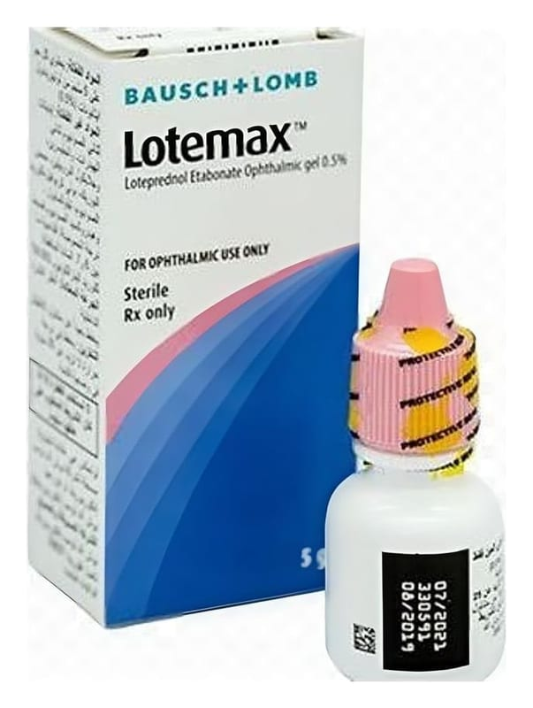

Lotemax 5 mg/ml Göz Damlası, Süspansiyon, 5 ml

Ne için kullanılır
KT · Bölüm 1LOTEMAX, kortikosteroidler adı verilen bir ilaç grubun aittir. Süt görünüşlü beyaz süspansiyon içeren 5 mL’lik beyaz LDPE şişelerde sunulur. Gözde çeşitli uyaranlar ile ortaya çıkan iltihabı (kızarıklık, ağrı, şişkinlik, kaşıntı vb.) ortadan kaldırmaktadır. Bu amaçla, - gözdeki çeşitli yapıların alerjik ve iltihabi hastalıklarının tedavisinde kullanılır. Ayrıca, göz cerrahisini takiben ameliyat sonrası oluşan iltihabın tedavisinde de kullanılır. Bu ilacı kullanmaya başlamadan önce bu KULLANMA TALİMATINI dikkatlice okuyunuz, çünkü sizin için önemli bilgiler içermektedir.
• Bu kullanma talimatını saklayınız. Daha sonra tekrar okumaya ihtiyaç duyabilirsiniz. • Eğer ilave sorularınız olursa, lütfen doktorunuza veya eczacınıza danışınız. • Bu ilaç kişisel olarak sizin için reçete edilmiştir, başkalarına vermeyiniz. • Bu ilacın kullanımı sırasında, doktora veya hastaneye gittiğinizde doktorunuza bu ilacı kullandığınızı söyleyiniz. • Bu talimatta yazılanlara aynen uyunuz. İlaç hakkında size önerilen dozun dışında yüksek veya düşük doz kullanmayınız.